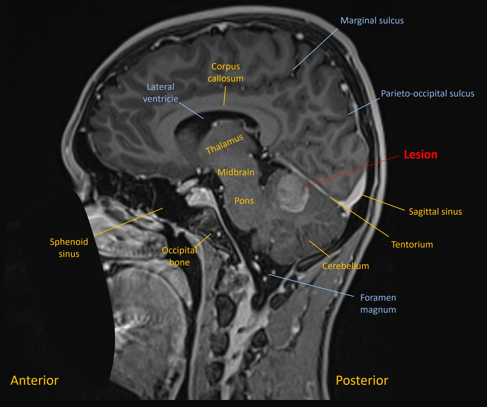
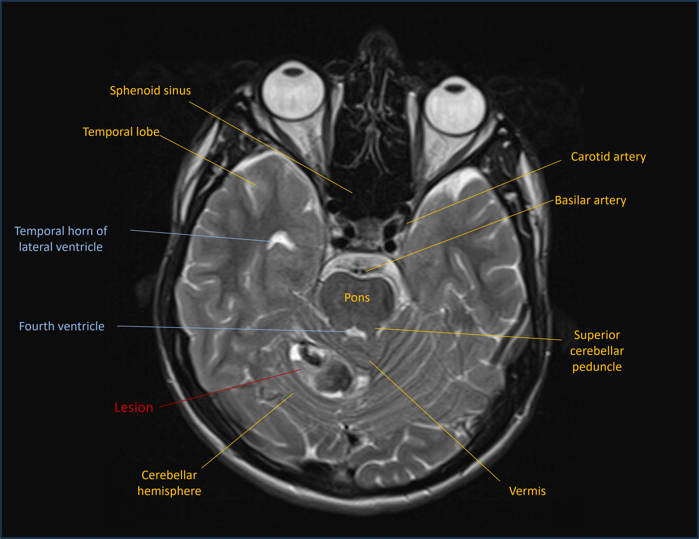
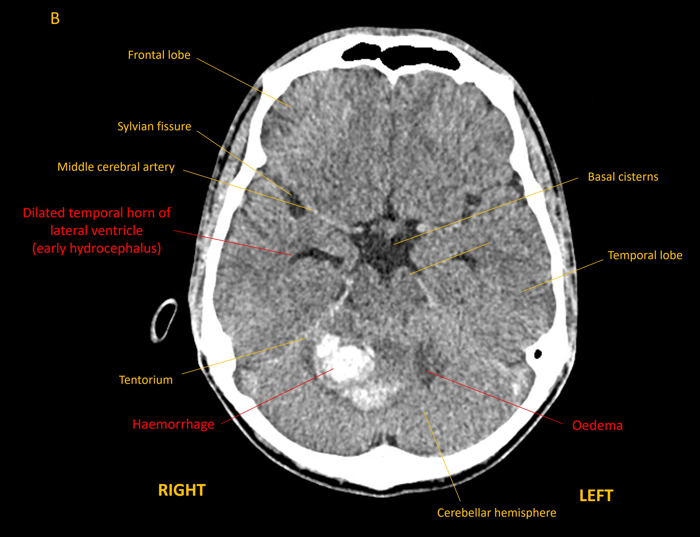
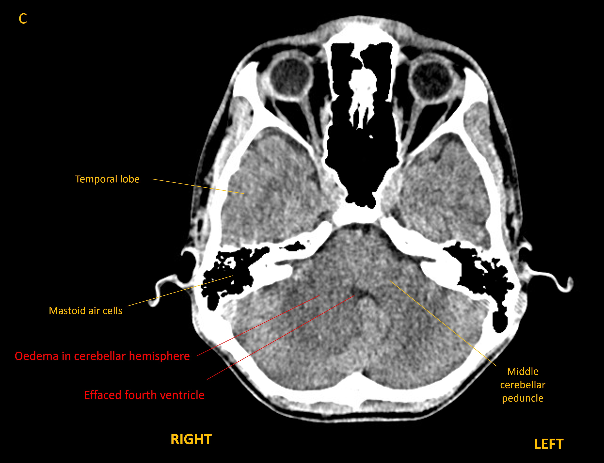
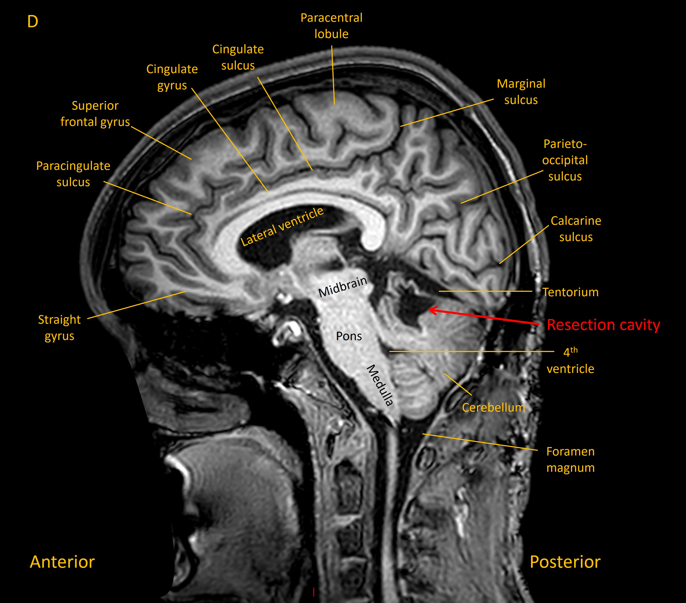

Case 2. Clumsy hand
Outcome
MRI showed a lesion in the right cerebellar hemisphere, with appearances suggestive of a recent haemorrhage surrounding an underlying lesion - shown on the sagittal T1 and axial T2 MRI images below: .


A differential diagnosis was suggested, including tumour, but the imaging was thought most likely to reflect an underlying cavernoma.
The patient was stable, so no immediate intervention was needed. He remained under follow-up with plans for a repeat MRI, in the hope that as the haemorrhage resolved the lesion would be more clearly visible.
However, he deteriorated 5 weeks later, with headache, vomiting, vertigo, worsening ataxia (walking as if drunk), and dysarthric speech. CT imaging showed hydrocephalus developing - with dilatation of the temporal horns of the lateral ventricles - as well as effacement of the fourth ventricle lower down.


He was transferred to a neurosurgical centre and had an external ventricular drain inserted to relieve the hydrocephalus. In the following days had a posterior fossa craniotomy and removal of the lesion, which was confirmed to be a cavernoma.
He experienced gradual recovery in the following months, though still had some residual right upper limb ataxia on examination at follow-up 6 months later. A sagittal T1 MRI is shown below, with the resection cavity visible.

18 months later, the patient had regained good use of the right arm, but still experienced minor difficulties in writing, and in reaching for objects (e.g. glasses of water). He had residual difficulties with the sports he used to play. However, he was living and working independently.
Final diagnosisAtaxia and subsequent hydrocephalus due to cerebellar haemorrhage from underlying cavernoma
Key points
Return to Cases